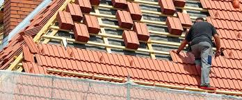

How to Protect Your Business From Roof Repair Scams
One of the best ways to attract new customers for your roofing business is through word-of-mouth referrals. Make sure your employees are properly trained to meet customer expectations. Mark your vehicles with your business' logo to ensure that your customers will remember you. As time goes on, your customers will be more likely to recommend your company to their friends and family. Start a website for your company to showcase your work and attract potential customers. You can also make use of a lawn sign for your business.
A legitimate roofing company will have multiple sources online. A look at their online presence is a good sign. While many storm chasers may pretend to be roofers, the majority of them will have proper online presences. Beware of companies that hide their deficiencies in order to avoid being discovered. Having several online sources is a good sign of a reputable company. To avoid being scammed, do not be afraid to call around for references.
Another way to protect your business is to have insurance. Although the roof is a rough environment, insurance will protect your company and its workers from harm. Professional liability insurance, workers' compensation insurance, and equipment insurance are all essential pieces of protection. The last two are crucial to your business and should never be neglected. Your customers and employees deserve to be protected and be happy. If you don't have the right insurance, you're likely to find yourself in a situation where you're unable to complete the job due to damage caused by water.
Lastly, be sure that your roof repair vancouver company offers you a written estimate. A legitimate company should provide you with an estimate in writing and have a website that is easily accessible and easy to use. In some cases, a legitimate roofing company will use a middleman to complete the job. Such companies are not likely to have the experience to handle the work themselves. Moreover, many of them are just trying to get away with not having an online presence, while the real thing is far more important.

A roofing company should have multiple online sources for customer reviews. If it does, it is a legitimate roofing company. A legit roofing contractor will have several websites, including their own. This is because most legitimate companies have a good online presence. They should have several reviews, which are a good indicator of their reputation. Besides the website, a roofing company should have a physical presence. A professional should have a website and have the right licenses and certifications to perform the work.
When selecting a roof repair surrey company, it is important to check the reviews of past customers. People often post their experiences online and it is important to find out if the reviews are genuine. A company with a website should also have a warranty policy for their work. This will protect you in the event that something happens to your roof. If your roofing contractor has a guarantee, this will give you peace of mind and a good chance of getting a favorable review.